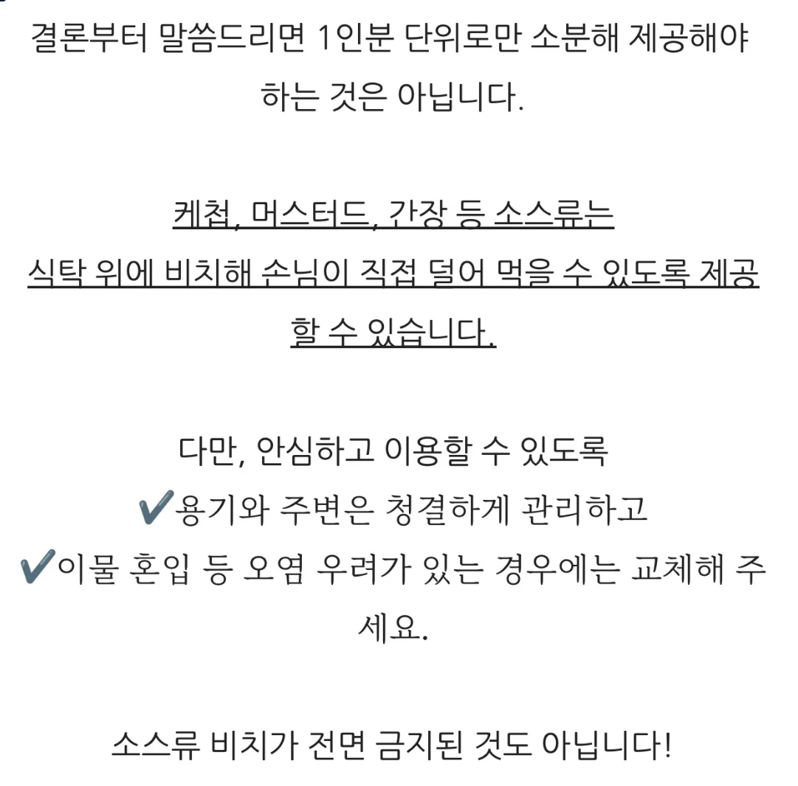
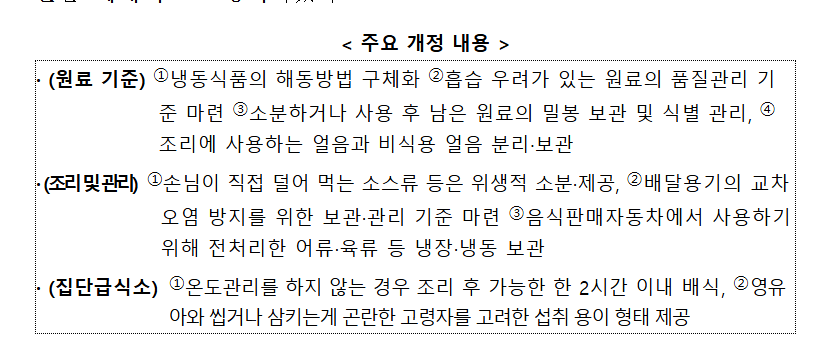
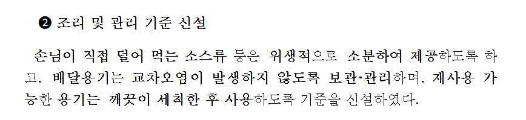
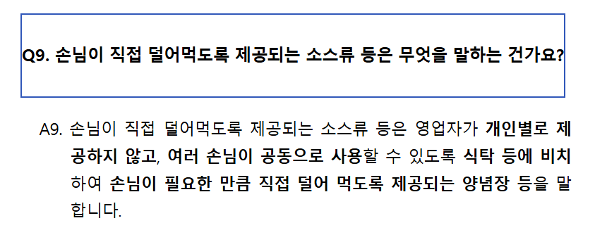

개드립에 식약처 소스 관련 식당 멸망은 근들갑이다
https://www.dogdrip.net/727692541
이 글 보고 생각난건데

이런 해명을 했는데
사실 식약처에서 기준삼은건 바로



① 개인별로 제공하지 않고
② 여러 손님이 공동으로 사용하고
③ 식탁 등에 비치되어 있고
④ 손님이 직접 필요한 만큼 덜어먹는 양념장 등
즉... "국밥집 식탁 위 새우젓 소스통"
식약처에서 "소분" 이라는 단어의 해석완화로 좀 숨통 트여준거 같은데
국밥러버인 내가 볼 때 새우젓이랑 다대기는 해당 안될 수 도 있음
새우전 접시에 찔끔 주는 집은 킹받지.